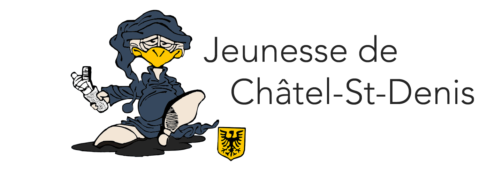
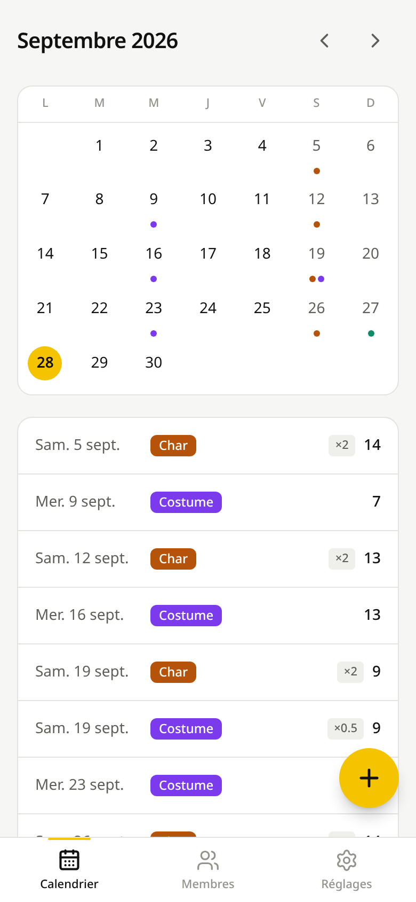
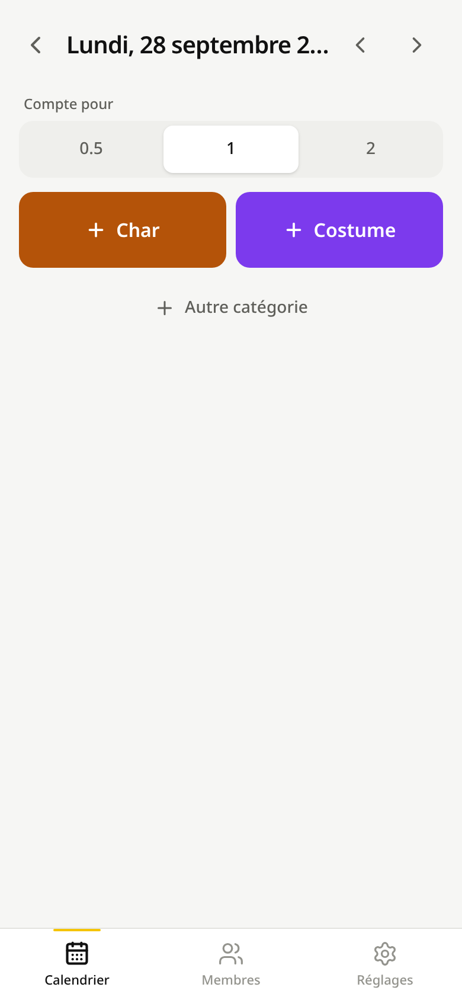
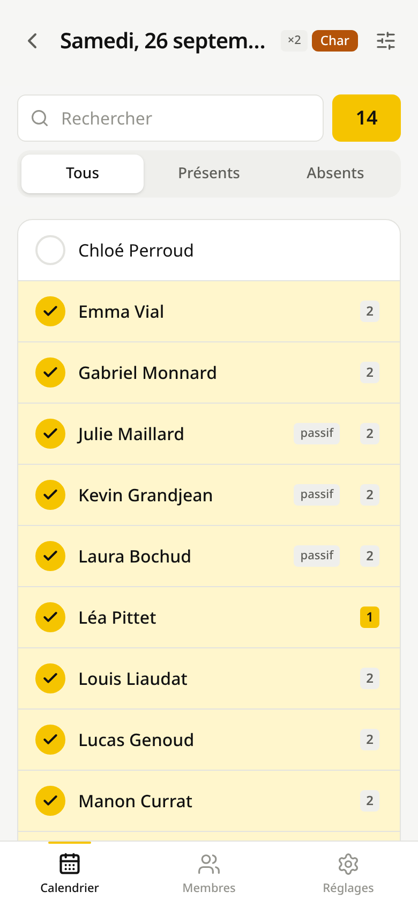
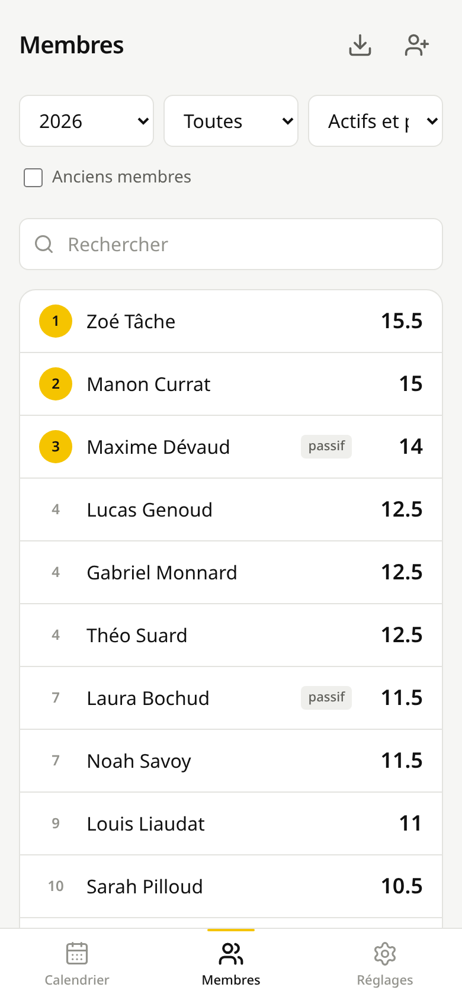
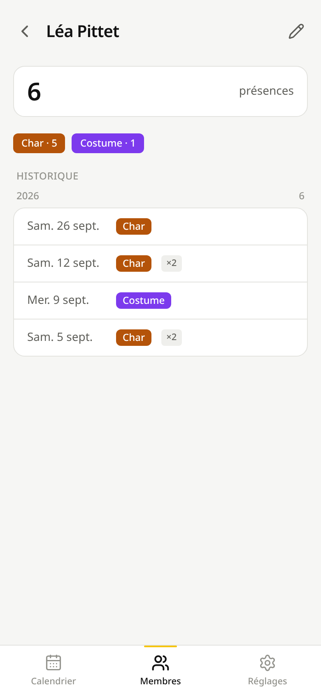
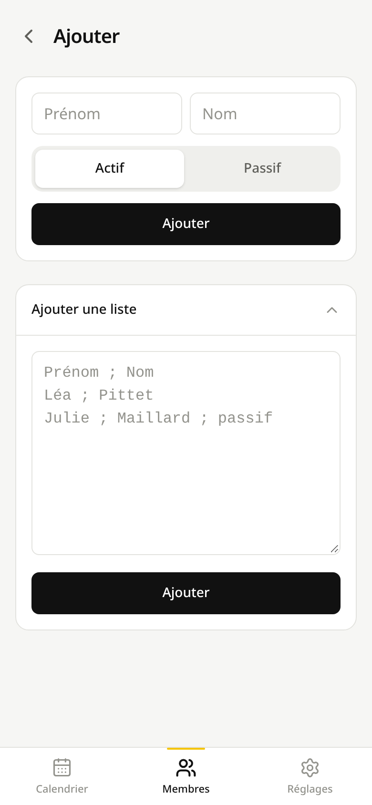
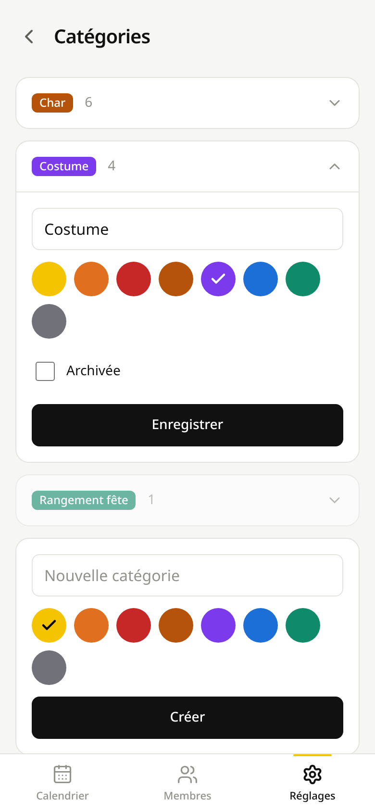
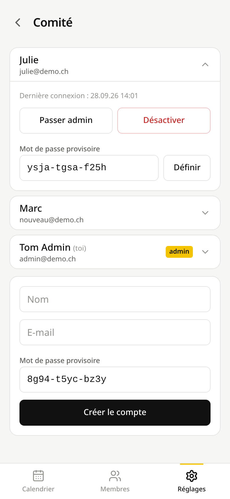

Guide express
Présences de la Jeunesse de Châtel-St-Denis
jeunesse-csd.vercel.app
Se connecter
- Identifiant = e-mail + mot de passe provisoire, donnés par un admin.
- À la première connexion, tu choisis ton mot de passe (8 caractères min.).
- Mot de passe oublié : demande à un admin.
Installer sur le téléphone
- iPhone : Safari → Partager → Sur l'écran d'accueil.
- Android : Chrome → ⋮ → Installer l'application.
Le principe
- Une séance = un jour + une catégorie (Char, Costume…). Une seule séance par catégorie et par jour.
- On coche les présents. Pas coché = absent. Pas de bouton « Enregistrer » : tout est enregistré à chaque coche.
- Chaque séance a un poids : en général 1 (soirée) ou 2 (journée complète) ; 0.5 pour un petit travail d'une heure ou deux.
- Le classement additionne les poids des séances où chacun était présent.
Qui peut faire quoi
| Comité | Admin | |
|---|---|---|
| Séances, pointage, classement, membres, catégories | oui | oui |
| Supprimer une séance | les siennes | toutes |
| Supprimer un membre ou une catégorie jamais utilisés | — | oui |
| Comptes du comité (créer, désactiver, mot de passe) | — | oui |
1Pointer une séance

Calendrier

Page du jour

Pointage
- + : nouvelle séance aujourd'hui. Pour un autre jour, touche le jour dans le calendrier.
- Une séance existante : la toucher pour pointer ou corriger.
- Poids, à choisir avant la catégorie.
- Catégorie : crée la séance et ouvre le pointage.
- Autre catégorie pour un travail ponctuel (rangement, loto…). Retaper le même nom réutilise la même catégorie.
- Recherche, sans accents ni majuscules (
zoetrouve Zoé). - Toucher une ligne coche ou décoche la personne.
- Poids perso d'une personne cochée, par exemple 1 au lieu de 2 si elle est arrivée l'après-midi.
- Options : poids de la séance, remarque, suppression.
- On peut pointer à plusieurs téléphones la même séance : la liste se met à jour toute seule.
- Sans réseau, la case revient en arrière et un message s'affiche : recoche quand ça capte.
- Séance créée sur le mauvais jour : Options → Supprimer la séance (auteur ou admin), puis recrée-la.
2Membres et classement

Membres

Fiche

Ajouter
- Export CSV (Excel) de ce qui est affiché, avec les mêmes filtres.
- Ajouter une personne ou une liste.
- Filtres : année, tout, ou dates libres ; catégorie ; actifs / passifs ; anciens membres.
- Rang et total. Ex æquo = même rang, le suivant saute (4, 4, 4, puis 7). Toucher un nom ouvre sa fiche.
- Modifier : nom, actif / passif, Ancien membre quand quelqu'un quitte la jeunesse.
- Historique de la personne, depuis le début.
- Liste : une personne par ligne,
Prénom ; NomouPrénom ; Nom ; passif.
- Un ancien membre disparaît du pointage et du classement, mais son historique est conservé.
- On n'enregistre que le prénom et le nom : des membres peuvent être mineurs.
3Catégories et comptes

Réglages → Catégories

Réglages

Réglages → Comité (admin)
- Catégorie permanente : elle a son bouton sur la page de chaque jour. Toucher pour modifier nom et couleur.
- Archivée = ponctuelle : plus de bouton, mais ses séances comptent toujours.
- Une catégorie ponctuelle (grisée).
- Apparence : système, clair ou sombre.
- Comité : les comptes, visible seulement pour les admins.
- Désactiver un membre du comité qui s'en va : il ne peut plus se connecter, ses saisies restent.
- Mot de passe provisoire pour quelqu'un qui a oublié le sien : il devra le changer à la connexion.
- Nouveau compte (admin), en bas de la page Comité : nom, e-mail et mot de passe provisoire proposé. Aucun mail n'est envoyé : transmets toi-même l'e-mail et le mot de passe à la personne.
- Plus bas dans Réglages : ton nom, ton mot de passe, la déconnexion.
- Rien ne se perd : membres, catégories et comptes s'archivent ou se désactivent au lieu d'être supprimés.